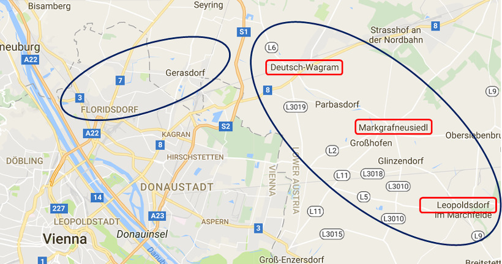

바그람 전투 (2편) - 천.지.인.
게시: 2017-06-11T14:14:36+09:00
손자병법에 따르면, 싸움에서 가장 중요한 것은 천지인, 즉 하늘과 땅과 사람이었습니다. 이건 결코 귀신 씨나락 까먹는 소리가 아니라, 시기과 지형과 병력이 중요하다는 뜻입니다. 나폴레옹과 카알 대공은 서로 이 세가지를 확보하기 위해 많은 노력을 기울였습니다. 병력은 양측 모두 최선을 다해 끌어 모아서 얼추 쌍방이 비슷한 규모를 갖추게 되었습니다만, 시기와 지형에 대해서는 양측의 주도권이 뚜렷했습니다. 시기는 카알 대공이 아니라 나폴레옹이 주도권을 쥐고 있었고, 반대로 지형은 카알 대공이 선택할 수 있었습니다.
나폴레옹이 전투 시기를 택할 수 있었던 이유는 간단합니다. 공격은 나폴레옹이 하는 것이었으니까요. 하지만 공격을 나폴레옹이 한다고 해서 전투 시기를 꼭 나폴레옹이 정하는 것이 아닐 수도 있었습니다. 카알 대공이 나폴레옹과의 결전을 회피하고 다른 곳, 그러니까 보헤미아나 헝가리로 또 후퇴한다면 전투 시기는 카알 대공이 원하는 시기가 될 수도 있었습니다. 나폴레옹은 원정군의 입장에서 빨리 오스트리아와의 전쟁을 끝내고 싶어했으므로, 그렇게 카알 대공이 더 깊숙한 후방으로 후퇴해버릴 수도 있다는 것이 나폴레옹에게는 가장 큰 골치거리였습니다. 그러나 카알 대공도 더 전쟁이 길어지는 것을 원치 않았습니다. 애초에 이 전쟁에 승산이 있다고 보지 않았던 그도 이기든 지든 빨리 이 전쟁을 끝내는 것이 합스부르크 왕조에 더 유리하다고 보았거든요.
그에 비해 어디서 싸우느냐는 카알 대공의 결정 사항이었습니다. 쳐들어오는 나폴레옹을 어느 지점에서 막아서느냐의 문제였으니까요. 중요한 것은 과연 카알 대공이 그 위치를 어디로 정하느냐 하는 것이었습니다. 여기에 대해서 훗날 사람들은 카알 대공이 멍청하게도 강변에서 도강을 막지 않았다고 떠들어댔지만 카알과 그의 참모들은 이 문제에 대해 많은 고민을 했고 나름 신중하고 현명한 결정을 내렸습니다. 이미 언급한 바와 같이, 나폴레옹이 도나우 강의 어느 곳에서 도강할 지 확신할 수 없었으므로 카알 대공은 전체 병력을 강변 가까이에 바싹 붙여 놓지 않기로 했습니다. 그랬다가 나폴레옹이 엉뚱한 곳에서 도강한다면 제대로 대응을 못할 뿐더러, 강변 옆의 막사는 병사들의 건강에도 좋지 않았으니까요.
그렇다면 도나우 강변 뒤로 펼쳐진 마르히펠트(Marchfeld) 평원에 병력을 배치하는 것이 답이었습니다. 여긴 강변에서 가까우니까 나폴레옹이 강변 어느 쪽에 상륙하든지 신속성과 공간적 유연성의 잇점을 모두 가지고 프랑스군을 요격할 수 있었습니다. 지난번 아스페른-에슬링 전투도 여기서 싸워서 마침내 나폴레옹을 패배시킨 바 있었지요. 그러나 카알 대공과 그의 참모들은 여기도 병력 전개의 적소가 아니라고 판단했습니다. 왜 그랬을까요 ? 결국 아스페른-에슬링 전투의 교훈이 있었기 때문이었습니다. 그때 싸워보니, 일단 마르히펠트는 평원답게 기병대가 활약하기에 좋은 공간이었습니다. 그런데 당시에도 지금도, 기병은 프랑스군이 오스트리아군에 비해 크게 우위에 있는 병종이었습니다. 바로 4년 전 아우스테를리츠 전투에서 완패한 오스트리아는 전쟁 배상금의 일부로 많은 수의 말을 빼앗겼기 때문에, 프랑스군의 기병대는 크게 강해졌고 오스트리아군은 그만큼 약해졌던 것입니다. 덕분에 지난 전투에서도, 아스페른-에슬링 사이의 중앙 공간에서 오스트리아군은 베시에르가 지휘하는 프랑스 기병대에게 막혀 전과 확대를 전혀 하지 못했습니다. 뿐만 아니었습니다. 마르히펠트 평원은 완전히 탁 트인 벌판은 아니었고, 여러 마을과 작은 숲, 그리고 시냇물이 얽혀 있는 곳이어서, 대규모의 보병대가 밀집 진형을 이루며 싸우기엔 다소 까다로운 곳이었습니다. 그 때문에 보병들은 부분적으로 산개하여 전투를 벌여야 했는데, 이는 상대적으로 숙련된 프랑스 보병들의 장기였고, 경직된 밀집 전열에 대한 훈련만을 받아온 오스트리아 보병들은 그런 산개 전투에서 무척 미숙한 모습을 보여주었습니다. 때문에 에슬링에서 고작 1개 사단에 불과한 부데 사단이 에슬링의 커다란 곡물 창고를 근거지로 저항하자, 무려 3대1의 숫적 우위를 가진 오스트리아군이 당해내지 못하고 물러서야 했었지요.
여기도 안된다 저기도 곤란하다... 그러면 결국 어디에서 싸워야 한단 말입니까 ? 거기에 대해 카알 대공의 참모인 빔펜(Maximilian von Wimpffen) 장군은 루스바흐(Russbach) 고원과 비삼베르크(Bisamberg) 언덕을 추천했고, 긴 고민 끝에 카알 대공도 그 조언을 받아들였습니다.

(마르히펠트를 위에서 틀어막는 두 고지대, 북서쪽의 비삼베르크와 북동쪽의 루스바흐입니다.)
카알 대공은 선택한 루스바흐 고원은 마르히펠트 평원의 북동쪽에, 그리고 비삼베르크는 북서쪽에 있었고, 마르히펠트 평원을 북쪽에서 감싸는 모양새를 가지고 있었습니다. 이들은 모두 나지막한 높이에 불과하여, 루스바흐 고원은 고원이라는 명칭이 부끄럽게도 마르히펠트 평원보다 고작 10m 정도 더 높은 평원 지대로서, 마르히펠트와는 나름 가파른 경사면을 이루고 있었습니다. 이 경사면 경계선을 따라 고원과 같은 이름인 루스바흐 시냇물이 흘렀는데, 이 경사면 지대의 이름이 바그람(Wagram)이었고, 이 고원의 남쪽 경계면에 위치한 마을 이름이 도이치-바그람(Deutsch-Wagram)이었습니다. 이 루스바흐 고원 지대에는 마르히펠트처럼 마을이 많았습니다. 도이치-바그람 남동쪽으로는 마르크그라프노이지들(Markgrafneusiedl)이 있었고 고원의 동쪽 끝 부분에는 레오폴츠도르프(Leopoldsdorf)가 있었습니다. 이 루스바흐 고원 지대와 마르히펠트 평원과의 경사면을 따라서는 고원과 같은 이름인 루스바흐라는 이름의 시냇물이 흘렀습니다. 이렇게 이어지는 루스바흐의 고지대는 도이치-바그람 마을을 기점으로 해서 남서쪽으로 이어지는 비삼베르크 언덕과 연결되었는데, 그 연결 부위는 고지대가 아니라 평지였습니다.
루스바흐 고원은 길쭉한 북서쪽의 비삼베르크 언덕과 함께 마르히펠트 평원 북쪽을 대략 반원형으로 감싸는 모양을 하고 있었습니다. 이 두 고지대면을 점거한다면 남쪽에서 올라올 프랑스군을 크게 벌어진 집게 모양으로 양측에서 위협할 수 있었습니다. 프랑스군이 루스바흐 쪽을 공격한다면 비삼베르크 쪽의 오스트리아군에게 측면을 노출하게 되고, 비삼베르크를 쳐도 루스바흐 쪽에서 위협받게 되는 것이지요. 결정적으로, 평평한 도나우 강변에서, 비록 10m 높이지만 루스바흐나 비삼베르크의 높이는 결정적인 전술적 잇점을 주었습니다. 항공기가 없는 시대에 10m 높이를 점거한다는 것은 3가지 측면에서 크게 유리했습니다. 먼저, 인간은 중력에서 자유로울 수 없는 존재인지라, 보병이든 기병이든 아래에서 위로 돌격하는 것이 그 반대의 경우보다 훨씬 힘들었습니다. 둘째, 고지에 위치한 보병이나 포병은 아래쪽에서 쏘아붙이는 사격과 포격으로부터 엄폐될 수 있었습니다. 세째, 아군은 아래 쪽의 적을 훤히 내려다볼 수 있는 것에 비해 적의 관측으로부터는 완전히 은폐될 수 있었습니다.
이 여러가지 잇점 중에 가장 결정적인 부분은 세번째 것이었습니다. 전장에서 가장 중요한 것은 그 지휘관이 적과 아군의 위치 및 움직임을 정확하게 파악하는 것입니다. 그래야 필요한 곳에 병력을 투입하는 것이 가능하니까요. 지난 아스페른-에슬링 전투 때도 나폴레옹은 전황 파악에 큰 애로 사항을 겪었습니다. 도나우 강변이 모두 평지이다 보니, 좀 높은 곳에서 사방을 둘러볼 수가 없었던 것입니다. 전투가 시작되기 전에는 아스페른의 교회 탑에서 그게 가능했는데, 그 지점에서 치열한 전투가 벌어지자 그럴 수도 없었지요. 결국 나폴레옹은 로바우 섬의 큰 나무가지에 줄사다리를 걸고 거기에 임시로 만든 그네 같은 것에 앉아서 전황을 파악하려고 애 썼습니다. 이번에도 그런 큰 나무가 필요한 지점마다 있을 거라고 확신할 수 없었던 나폴레옹은 그 점에 대해 골머리를 앓고 있었는데, 묵고 있던 쇤브룬(Schönbrunn) 궁전 정원에서 최선의 대안을 찾아냅니다. 정원사가 높은 나무의 가지치기를 할 때 사용하는 A자 모양의 사다리였지요. 실제로 나폴레옹이 7월 3일 쇤브룬 궁을 떠나 로바우 섬에 사령부를 설치할 때, 그의 짐 중에는 정원사의 사다리도 함께 들어 있었습니다. 하지만 그의 사다리 높이는 기껏해야 2m 정도였고, 카알 대공 이하 전체 오스트리아군이 누릴 10m 높이가 주는 잇점과는 비교가 되지 않았습니다.
결과적으로 보면 천지인 중에 하늘(시기)과 사람(병력)의 잇점은 나폴레옹이, 땅(지형)의 잇점은 카알 대공이 가진 상황에서 바그람 전투가 벌어지게 됩니다.
Source : The Life of Napoleon Bonaparte, by William Milligan Sloane
http://www.historyofwar.org/articles/battles_wagram.html
http://www.napolun.com/mirror/napoleonistyka.atspace.com/Battle_of_Wagram_1809.htm
https://en.wikipedia.org/wiki/Battle_of_Wagram